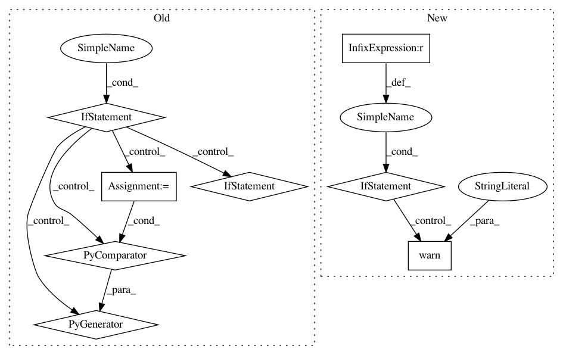

2aae12b10a3411009a2802a077bb8c6c0365b6ad,qiskit/aqua/operators/converters/abelian_grouper.py,AbelianGrouper,group_subops,#Any#Any#Any#Any#,86
Before Change
Raises:
AquaError: Any of list_op"s sub-ops do not have a ``commutes`` method.
if any(not hasattr(op, "commutes") for op in list_op.oplist):
raise AquaError("Cannot determine Abelian groups if an Operator in list_op does not "
"contain a `commutes` method".format())
if fast and all(isinstance(op, PauliOp) for op in list_op.oplist):
edges = cls._commutation_graph_fast(list_op)
else:
edges = cls._commutation_graph(list_op)
nodes = range(len(list_op))
// Keys in coloring_dict are nodes, values are colors
if use_nx:
coloring_dict = cls._networkx_coloring(nodes, edges)
else:
coloring_dict = cls._largest_degree_first_coloring(nodes, edges)
groups = {} // type: Dict
// sort items so that the output is consistent with all options (fast and use_nx)
for idx, color in sorted(coloring_dict.items()):
groups.setdefault(color, []).append(list_op[idx])
After Change
Raises:
AquaError: If any of list_op"s sub-ops is not ``PauliOp``.
if fast is not None or use_nx is not None:
warnings.warn("Options `fast` and `use_nx` of `AbelianGrouper.group_subops` are "
"no longer used and are now deprecated and will be removed no "
"sooner than 3 months following the 0.8.0 release.")
for op in list_op.oplist:
if not isinstance(op, PauliOp):
raise AquaError(
"Cannot determine Abelian groups if any Operator in list_op is not "
In pattern: SUPERPATTERN
Frequency: 3
Non-data size: 8
Instances
Project Name: Qiskit/qiskit-aqua
Commit Name: 2aae12b10a3411009a2802a077bb8c6c0365b6ad
Time: 2020-08-28
Author: 31178928+t-imamichi@users.noreply.github.com
File Name: qiskit/aqua/operators/converters/abelian_grouper.py
Class Name: AbelianGrouper
Method Name: group_subops
Project Name: tensorflow/cleverhans
Commit Name: f7715f63c17832f66e54164cc0ae3cb0e4afc4a3
Time: 2017-07-09
Author: nicholas@carlini.com
File Name: cleverhans/attacks.py
Class Name: Attack
Method Name: generate_np
Project Name: rtqichen/torchdiffeq
Commit Name: 47ba6dedb917847460b098c5f2b776a4c8bd0c1b
Time: 2021-01-05
Author: rtqichen@gmail.com
File Name: torchdiffeq/_impl/adjoint.py
Class Name:
Method Name: odeint_adjoint